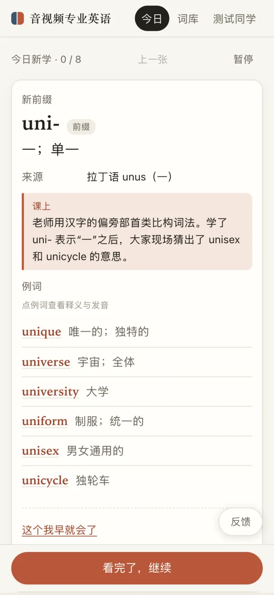
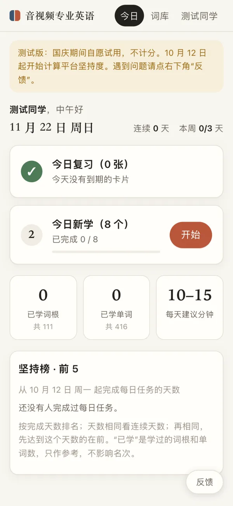
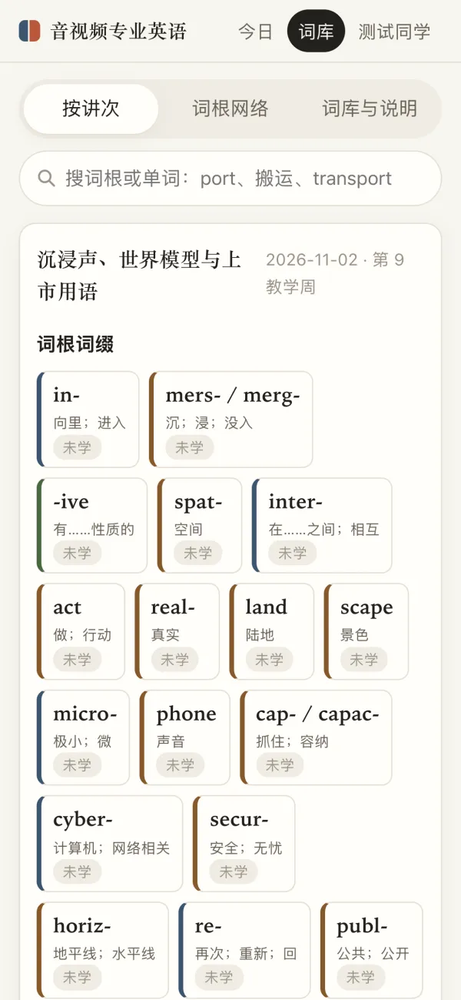
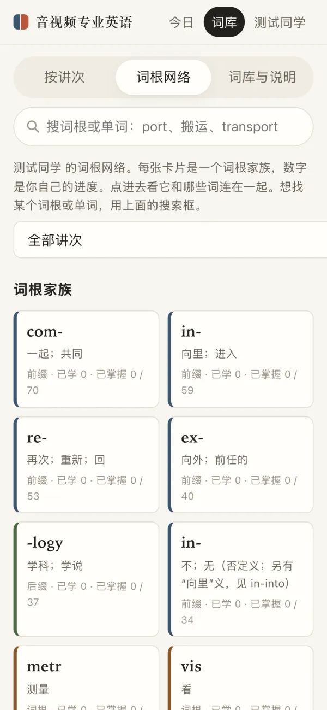

词根学习平台Root Words
《音视频技术专业英语》的课后练习。课上讲一个词根，课后它就进了每个人的复习队列：今天该复习的先做，再学几个新的，每天十到十五分钟。每张卡片背面写着“课上”那一刻，比如学了 uni- 之后，大家现场猜出了 unisex 和 unicycle。
After-class practice for my English for Audio & Video Technology course. Each card carries a note of the moment in class when the root was taught.

- 课程
- 音视频技术专业英语
- 用的人
- 一个教学班，35 名学生
- 每天
- 复习到期的卡片，再学 8 个新的，约 10–15 分钟
- 排期
- FSRS 间隔重复算法
长什么样What it looks like



为什么做Why I made it
词根词缀是我自己学英语的一个巨大转折。以前背单词很痛苦，学会构词法之后，单词变成了一块块可以拼起来的积木。暑假我先给儿子积木做了一套背单词的系统，九月开学，把它搬进了我的《音视频技术专业英语》。
这门课本来是讲音视频的专业词汇。但今天单纯讲一张术语表已经没什么价值了，所以我把它改成了每周精读科技和音视频领域真实发生的新闻、新设备、新技术，再把里面的词按构词法拆开。每节课我用一个小话筒录下来，让 AI 把我讲过的词全部挑出来，按词源拆开，补上例句，加进词库。所以每张卡片背面，都是这节课上真实发生过的事。
我说好歹这个课，你最后结束的时候，你能多记几个词根，你的词汇量能稍微涨上那么五六十个，也比水玩一学期强一点吧，对吧，我觉得这是我能做的。
“专业标签之外”沙龙 · 2026.11.18
这不是我给 35 个人备 35 套课，而是每个人带着同一节课，走自己的路。每个人的每个词都记着两个数：记得多牢、对你多难。答对了，下次隔久一点；答错了，很快再出，在你快要忘、还没忘的那天复习。
有一次服务器的硬盘满了，网站打不开，好几个同学给我发消息，说想背单词背不了了。那是我觉得这件事做对了的时刻。
几个设计Design choices
- 课上那一刻写在卡片上。iPhone 的 Duo、U87 麦克风的 bi-directional、Cmd+Shift+Z，这些课上埋下的线索是记忆的钩子。
- 考的是方法，不只是单词。穿插“迁移题”：用课上没讲过的派生词让学生猜意思，看拆词的方法学会了没有。
- 缺课了也能追上。几周没上线，回来按每天的上限慢慢补，不会一下子把积压的新词全砸过来。
- 不卡通。形式借鉴了给积木做的单词积木，但面向大学生重做：去掉卡通，留下那套学习逻辑。
怎么做的How it is built
没有第三方依赖：Node 内置的 SQLite 加原生 ES module，不需要构建。排期直接复用给积木做的 FSRS 代码，答题结果分三档：独立答对、看提示答对、答错。对错由服务器判，作答记录只追加不修改，为以后做研究留下干净的数据。